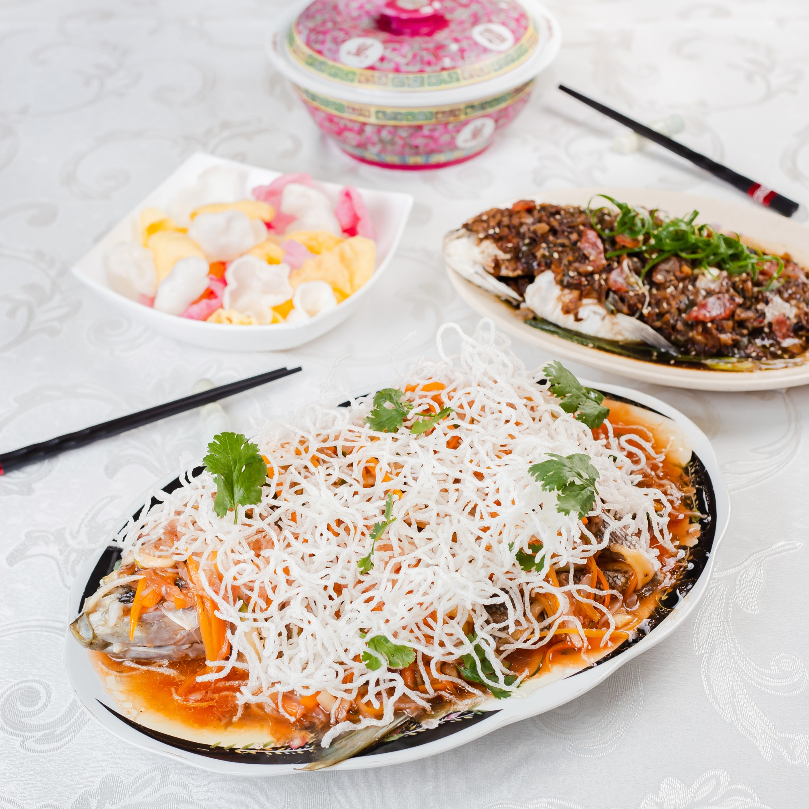
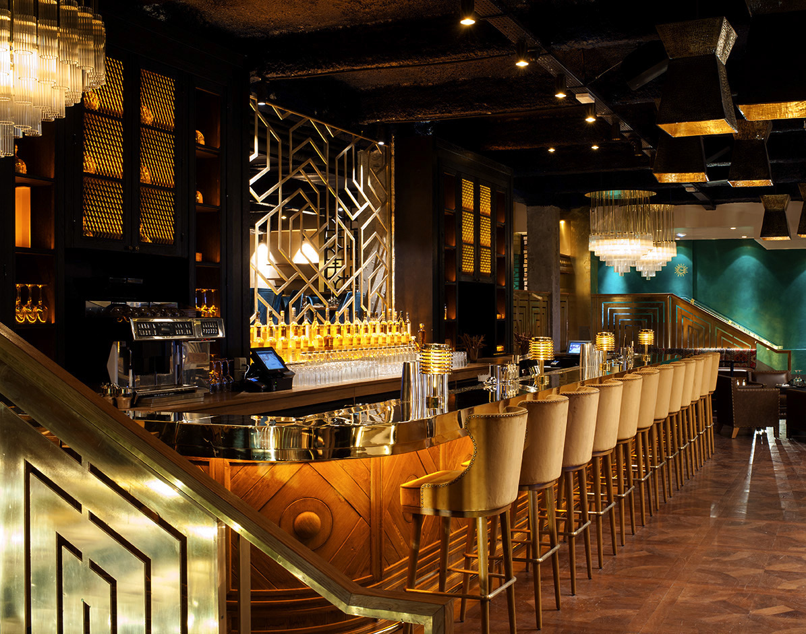
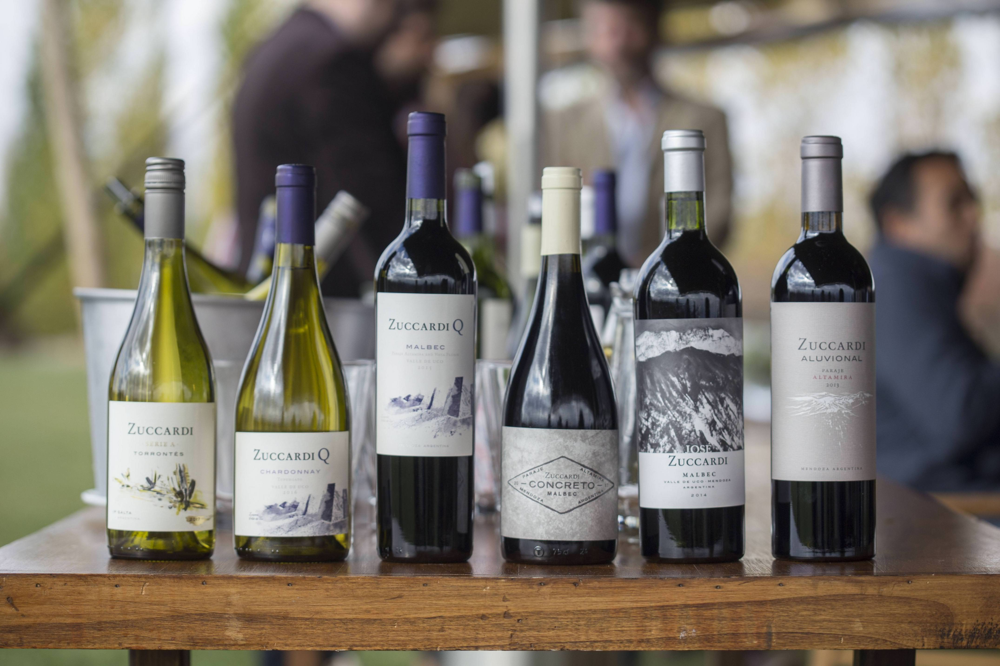

Astrid & Gastón

LA COCINA
Lo mejor de la distancia es el reecuentro. Las formas cambian, pero el espíritu se mantiene: seguimos enamorados de la cocina peruana. Hoy, más que nunca, queremos compartir ese sentimiento contigo.
Conoce nuestra propuesta

Bar
Un corazón que late fuerte y con vida propia. Cocteles clásicos y creativos llegarán ahora a tu casa.
Ver Más

Vinos
Más de 250 referencias de todo el mundo, recomendaciones personalizadas y una propuesta de maridaje para cada una de nuestras propuestas.